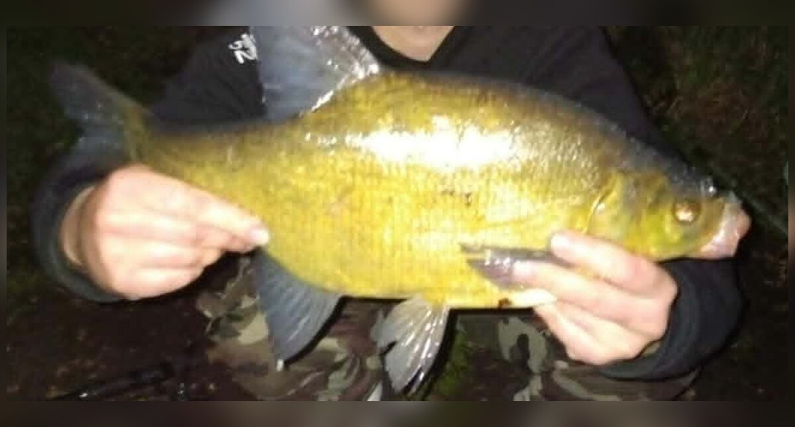

Rozpoznawanie i biologia leszcza
Wygląd i cechy rozpoznawcze
Leszcz (Abramis brama) to ryba z rodziny karpiowatych o bardzo wysokim, silnie bocznie spłaszczonym ciele — wysokość korpusu dorosłego osobnika stanowi zwykle około jednej trzeciej długości. Grzbiet jest ciemny, szarobrunatny lub zielonkawy, boki u młodych ryb srebrzyste, a u starszych nabierają charakterystycznego brązowozłotego, czasem niemal spiżowego połysku. Otwór gębowy jest skierowany ku dołowi i wysuwany w rodzaj rurki, co stanowi adaptację do żerowania w osadach dennych. Płetwa odbytowa jest długa, zawiera zwykle 23–30 promieni rozgałęzionych, a płetwy mają barwę szarą do ciemnoszarej. Charakterystyczna jest również warstwa śluzu pokrywająca ciało, wyraźnie obfitsza niż u większości karpiowatych. Dorosłe leszcze osiągają najczęściej 30–50 cm długości i masę 0,5–2 kg, choć w żyznych wodach trafiają się okazy znacznie większe.
Z czym bywa mylony — leszcz a krąp
Najczęstszą pomyłką jest mylenie młodego leszcza z krąpiem (Blicca bjoerkna), który ma bardzo podobną, wygrzbieconą sylwetkę. Różnice są jednak wyraźne, jeśli wiadomo, na co patrzeć. Krąp ma płetwy piersiowe i brzuszne z czerwonawym lub pomarańczowym odcieniem u nasady, podczas gdy u leszcza wszystkie płetwy są szare. Łuski krąpia są wyraźnie większe w stosunku do ciała — wzdłuż linii bocznej krąp ma ich zwykle 44–48, leszcz natomiast 51–60, drobniejszych. Oko krąpia jest proporcjonalnie większe względem głowy. Pomocna bywa też liczba promieni w płetwie odbytowej: u krąpia jest ich mniej, przeważnie 19–23 rozgałęzionych. Rozróżnienie ma znaczenie praktyczne, ponieważ lokalne regulaminy mogą traktować oba gatunki odmiennie, a w rejestrach połowów należy je zapisywać poprawnie. Młode leszcze, tzw. leszczyki, bywają też mylone z rozpiórem, który jest jednak rybą znacznie rzadszą, o bardziej wydłużonym ciele i ukośnym otworze gębowym.
Środowisko i występowanie w Polsce
Leszcz występuje pospolicie w całej nizinnej Polsce i należy do najliczniejszych gatunków naszych wód. Zasiedla jeziora, zbiorniki zaporowe, stawy, starorzecza oraz wolno i średnio płynące rzeki — od Odry i Wisły po mniejsze dopływy. Jest gatunkiem tak charakterystycznym dla dolnych, spokojnych odcinków dużych rzek, że w klasyfikacji rybackiej wyróżnia się wręcz „krainę leszcza". Spotykany jest również w wysłodzonych wodach Zalewu Wiślanego, Zalewu Szczecińskiego i przybrzeżnych partiach Bałtyku. Preferuje wody żyzne, o mulistym lub gliniastym dnie, bogate w bezkręgowce denne. W jeziorach stada leszczy przebywają zwykle w strefie głębszej, nad miękkim dnem, podchodząc na żerowiska w pobliże stoków i blatów. Toleruje umiarkowane zanieczyszczenie i niską przezroczystość wody, co tłumaczy jego liczebność w zbiornikach silnie zeutrofizowanych.
Biologia i tarło
Leszcz dojrzewa płciowo zwykle w wieku 4–6 lat, samce nieco wcześniej niż samice. Tarło odbywa się od końca kwietnia do czerwca, gdy woda osiąga około 12–17 °C, często w kilku rzutach rozdzielonych kilkudniowymi przerwami. Ryby ciągną wówczas na płytkie, zarośnięte partie litoralu, zalane łąki i ujścia dopływów, gdzie ikra przykleja się do roślinności. Samica składa, zależnie od rozmiaru, od kilkudziesięciu tysięcy do ponad trzystu tysięcy ziaren ikry. W okresie godowym samce pokrywają się wyraźną wysypką tarłową — drobnymi, białawymi brodawkami na głowie i przedniej części ciała. Tarło bywa głośne i widowiskowe, ryby pluskają tuż pod powierzchnią w gęstych stadach. Leszcz dożywa kilkunastu, a w sprzyjających warunkach ponad dwudziestu lat; tempo wzrostu silnie zależy od żyzności wody, dlatego w przegęszczonych zbiornikach tworzą się populacje skarlałe.
Żerowanie w ciągu roku
Leszcz jest typowym bentofagiem — żeruje przede wszystkim na dnie, odżywiając się larwami ochotek, rurecznikami, skorupiakami, mięczakami i detrytusem, który odfiltrowuje z mułu wysuwanym ryjkiem. Wiosną, po ociepleniu wody, stada wychodzą na płycizny i żerują intensywnie przed tarłem, często w pasie przybrzeżnym. Latem żerowanie koncentruje się w godzinach nocnych oraz o świcie i zmierzchu; w dzień duże leszcze przebywają głębiej, a na żerowiska podchodzą wieczorem, nieraz znacząc obecność charakterystycznymi pęcherzami gazu uwalnianymi z buchtowanego dna. Jesienią ryby zbijają się w duże stada i schodzą na głębsze stanowiska, żerując krócej, ale łapczywie, co bywa okresem połowu największych okazów. Zimą aktywność spada, lecz nie zanika — leszcze pobierają pokarm także pod lodem, powoli i wybrednie, dlatego są regularnie łowione metodami podlodowymi na drobne przynęty.
Przepisy, metody i praktyka połowu
Przepisy krajowe i zasady lokalne
Przepisy krajowe: Wody śródlądowe: § 6–7 nie ustanawia krajowego wymiaru ani okresu; sprawdź zasady lokalne. Źródło: Dz.U. 2023 poz. 1373, § 6–7
Granica okresu ochronnego: jeżeli pierwszy lub ostatni dzień okresu przypada w dzień ustawowo wolny od pracy, okres skraca się o ten dzień (§ 7 ust. 2); wyjątkiem jest całoroczna ochrona jesiotra.
Przed połowem: sprawdź aktualny regulamin i zezwolenie dla konkretnej wody. Wymiar, okres, limit lub zakaz lokalny może być ostrzejszy; brak wartości krajowej nie oznacza zgody na zabranie ryby.
Metody i przynęty
Podstawą połowu leszcza są metody gruntowe, a współcześnie przede wszystkim feeder (method feeder i klasyczny koszyk zanętowy), który łączy precyzyjne nęcenie z czułą sygnalizacją brań na szczytówce. Dobrze sprawdza się także klasyczna przepływanka i tyczka na wodach stojących oraz wolno płynących, z zestawem prowadzonym tuż nad dnem lub z przynętą wleczoną po dnie. Skuteczne przynęty to białe i czerwone robaki, ochotka (szczególnie zimą i wczesną wiosną), dżdżownice, kukurydza, ciasto oraz pęczki larw łączone z kukurydzą w tzw. kanapki. Na łowiskach mocno eksploatowanych dobre wyniki dają drobne pelety i mini kulki w wersji wafters. Zestaw powinien być stosunkowo delikatny: przypony 0,12–0,18 mm, haki rozmiarów 16–10 zależnie od przynęty. Branie leszcza bywa charakterystyczne — ryba często podnosi przynętę z dna, co na spławiku objawia się jego położeniem się na wodzie, a na feederze wyraźnym luzem na szczytówce.
Taktyka łowienia i nęcenie
Klucz do regularnych połowów leszcza to wybór żerowiska i konsekwentne, punktowe nęcenie. Warto szukać krawędzi stoków, rynien, granicy twardego i miękkiego dna oraz odległości, na której stado czuje się bezpiecznie — często 40–70 m od brzegu na jeziorach i zbiornikach. Zanęta dla leszcza powinna być pożywna i ciemnawa lub dopasowana do koloru dna, z dodatkiem grubszych frakcji: kukurydzy, pociętych robaków, peletu, ziaren konopi. Sprawdza się nęcenie wstępne kilkoma–kilkunastoma kulami lub koszykami, a następnie regularne donęcanie małymi porcjami, by utrzymać stado w łowisku, nie przekarmiając go. Leszcz jest płochliwy: hałas na stanowisku, ciężkie zestawy spadające na płytką wodę i zbyt grube przypony wyraźnie ograniczają brania dużych osobników. Po zacięciu warto holować rybę spokojnie i odprowadzać ją od nęciska, aby nie rozbić żerującego stada. Nocne zasiadki letnie na głębszych stanowiskach to klasyczny sposób na selekcję większych ryb.
Rekordy i okazy
Leszcz rośnie wolno, dlatego każdy osobnik powyżej 60 cm i 3 kg to już ryba wyróżniająca się, a egzemplarze ponad 4 kg uznaje się za okazy. Rejestry i zestawienia rekordów notują w Polsce leszcze o masie około 7–8 kg, choć do najstarszych, historycznych doniesień o jeszcze większych rybach należy podchodzić ostrożnie, bo nie zawsze były rzetelnie weryfikowane. Największe okazy pochodzą zwykle z dużych, żyznych jezior, zbiorników zaporowych i dolnych odcinków wielkich rzek, gdzie ryby mają dostatek pokarmu i mniejsze zagęszczenie konkurentów. Warto pamiętać, że wiek rekordowego leszcza może przekraczać dwadzieścia lat — to argument za rozważnym obchodzeniem się z największymi osobnikami i ich wypuszczaniem, ponieważ populacja odbudowuje takie ryby bardzo długo.
Wartość kulinarna i obchodzenie się z rybą
Leszcz ma mięso smaczne, ale dość ościste — liczne drobne ości widlaste zniechęcają część kucharzy, choć gęste nacinanie filetów skutecznie je neutralizuje. Tradycyjnie ceniony jest leszcz wędzony, w którym ości łatwiej oddzielić, a tłustsze ryby jesienne dają najlepszy efekt; popularne jest też smażenie dzwonków z gęstym nacinaniem mięsa, które rozdrabnia ości, oraz pieczenie w całości. Ryby z wód mulistych mogą mieć posmak mułu, który ogranicza się przez odpowiednie sprawienie i przyprawienie. Coraz więcej wędkarzy traktuje jednak leszcza, zwłaszcza dużego, jako rybę do wypuszczenia. Przy zamiarze zwrotu rybie wolności należy używać podbieraka, mokrej maty lub odhaczać rybę w wodzie, skracać czas przebywania na powietrzu i chronić obfitą warstwę śluzu, która stanowi naturalną barierę przeciw infekcjom. Latem, przy nagrzanej wodzie, warto dać rybie czas na odzyskanie równowagi przed wypuszczeniem.
Ciekawostki
Stado żerujących leszczy potrafi dosłownie przeorać fragment dna — ślady buchtowania i smugi mułu unoszone prądem zdradzają obecność ryb doświadczonemu obserwatorowi. Charakterystyczne „leszczowe bąble", czyli drobne pęcherzyki gazu wędrujące ku powierzchni, od pokoleń służą wędkarzom do lokalizacji żerujących stad. Leszcz krzyżuje się naturalnie z płocią i krąpiem; hybrydy o pośrednich cechach bywają prawdziwą zagadką przy oznaczaniu i zdarzają się częściej, niż mogłoby się wydawać. Gatunek ma też duże znaczenie gospodarcze — przez dziesięciolecia był jedną z podstawowych ryb rybactwa śródlądowego i jeziorowego w Polsce. Ze starszych osobników odczytuje się wiek z łusek i innych struktur kostnych, podobnie jak słoje drzewa, co pozwala badać tempo wzrostu populacji w konkretnym zbiorniku.
FAQ — najczęstsze pytania
Jak najszybciej odróżnić leszcza od krąpia?
Najprościej spojrzeć na płetwy parzyste: u krąpia płetwy piersiowe i brzuszne mają czerwonawy odcień u nasady, u leszcza są jednolicie szare. Dodatkowo krąp ma wyraźnie większe łuski (44–48 wzdłuż linii bocznej wobec 51–60 u leszcza) i proporcjonalnie większe oko. Przy rybach nietypowych warto policzyć promienie płetwy odbytowej, pamiętając, że zdarzają się hybrydy o cechach mieszanych.
Kiedy leszcz żeruje najlepiej?
Najbardziej regularne żerowanie przypada na okres od późnej wiosny do wczesnej jesieni, przy czym latem szczyt aktywności wypada nocą oraz o świcie i o zmierzchu. Wiosną przed tarłem leszcze intensywnie żerują na płyciznach, a jesienią duże stada żerują krócej, lecz zdecydowanie, na głębszych stanowiskach. Zimą ryby pozostają aktywne w ograniczonym zakresie i biorą delikatnie, najchętniej na ochotkę. Pamiętajmy, że to ogólne prawidłowości — konkretna woda i pogoda zawsze weryfikują teorię.
Czy leszcz ma wymiar ochronny?
§ 6–7 rozporządzenia Dz.U. 2023 poz. 1373 nie ustanawia dla leszcza krajowego wymiaru ani okresu ochronnego. Przed połowem sprawdź zezwolenie, regulamin i komunikaty gospodarza tej wody; mogą wprowadzać dodatkowe, ostrzejsze warunki, lecz nie zastępują aktu.
Jaka zanęta na dużego leszcza?
Duży leszcz potrzebuje pożywnego nęciska z grubymi frakcjami: kukurydzą, peletem, ciętymi robakami i konopiami, osadzonymi w ciemnej lub naturalnej kolorystycznie zanęcie. Liczy się precyzja podawania w jeden punkt i regularność donęcania małymi porcjami, a nie sama ilość. Na wodach mocno łowionych selekcję większych ryb poprawiają większe przynęty haczykowe i łowienie nocą lub na większych dystansach.
Praktyczny poradnik połowu
Jeżeli planujesz konkretną zasiadkę, zobacz jak łowić leszcza — przynęty, nęcenie i wybór stanowiska.
Źródła i weryfikacja
Prawo: punktem wyjścia dla krajowych wymiarów i okresów ochronnych w powierzchniowych wodach śródlądowych jest § 6–7 rozporządzenia Dz.U. 2023 poz. 1373 (źródło zweryfikowano 2026-07-20). Przed połowem sprawdź zezwolenie, regulamin i komunikaty gospodarza tej wody; mogą wprowadzać dodatkowe, ostrzejsze warunki, lecz nie zastępują aktu. Praktyka redakcyjna: opis metod i taktyki ma charakter edukacyjny.
Tożsamość biologiczna i źródła
Nazwa łacińska: Abramis brama. Grupa atlasu: spokojny żer. Alias: bream.
Źródła: FishBase: Abramis bramaGBIF: Abramis bramaIUCN Red List: Abramis brama. Dostęp: 2026-07-17. Zakres: tożsamość taksonomiczna i nazewnictwo oraz, gdy wskazano, ocena ochrony; bez potwierdzenia lokalnego występowania, stanu łowiska ani zasad połowu.
Jak odróżnić: Leszcz i Krąp
| Cecha | Leszcz | Krąp |
|---|---|---|
| Sylwetka i płetwa odbytowa | Ciało wyższe i silniej spłaszczone; płetwa odbytowa dłuższa. | Ciało mniej wysokie; płetwa odbytowa krótsza. |
| Pysk | Dolny, wysuwany rurkowato. | Dolny, ale niewysuwany rurkowato. |
Źródła cech: FishBase: Abramis brama · FishBase: Blicca bjoerkna. Dostęp: 2026-07-17.
Granica oznaczenia: Proporcje zależą od rozmiaru i ujęcia; pewne oznaczenie może wymagać policzenia promieni i łusek. Liczenie promieni lub łusek wymaga ostrego obrazu i praktyki; cechy barwy i proporcji zależą od wieku, płci, populacji i ubarwienia godowego.
Komentarze